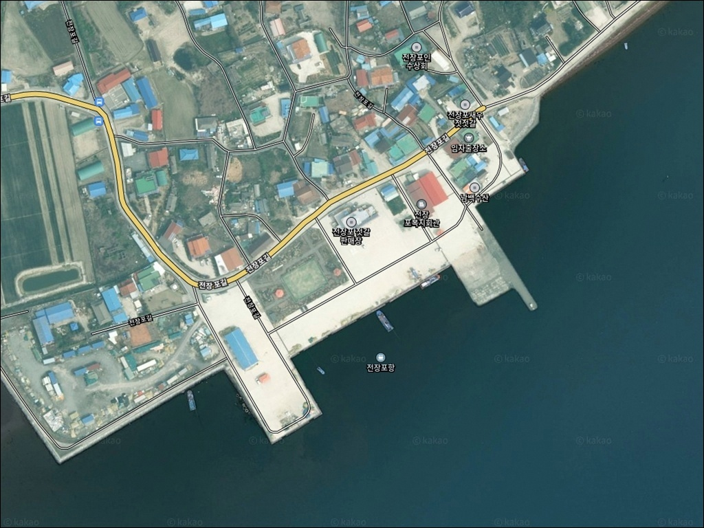
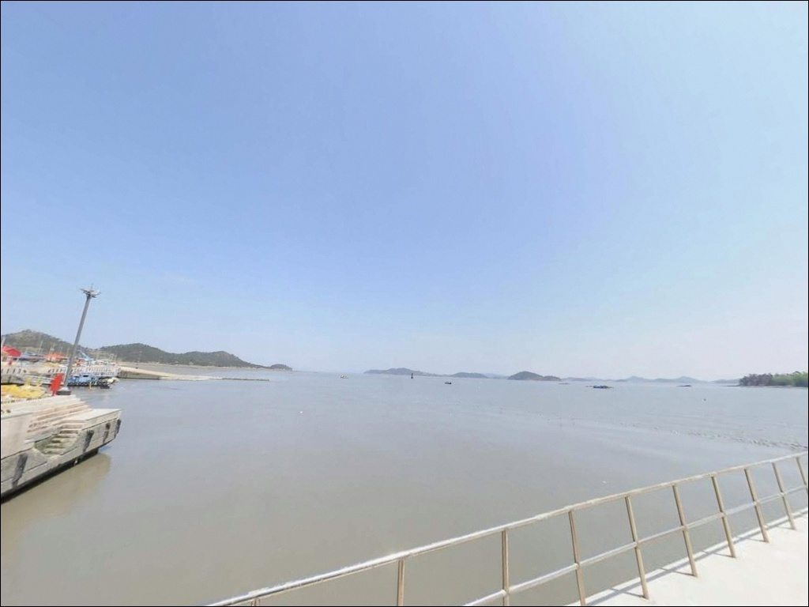
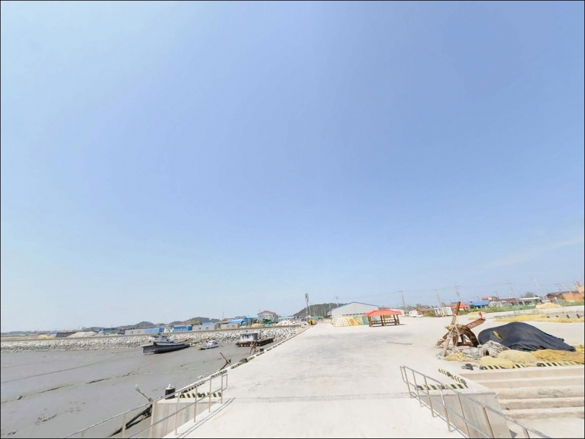
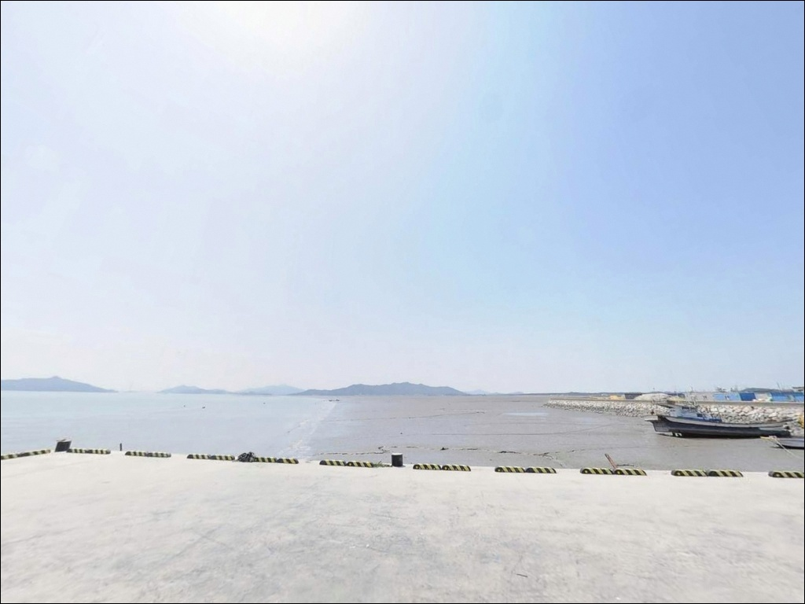
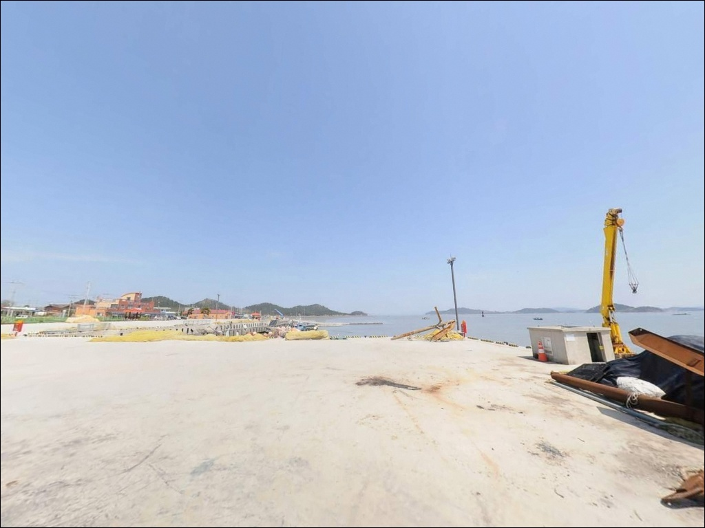
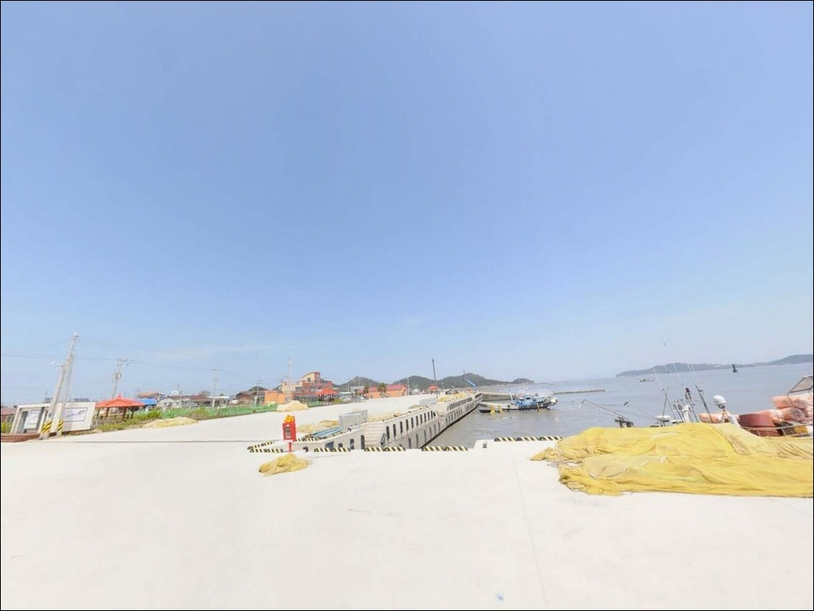
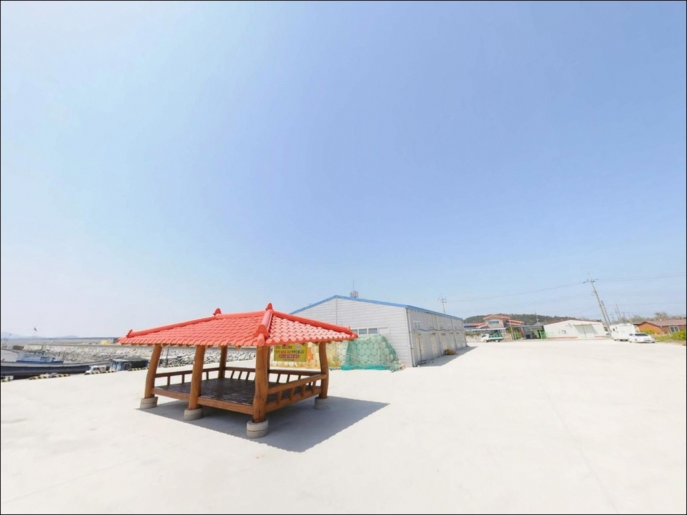
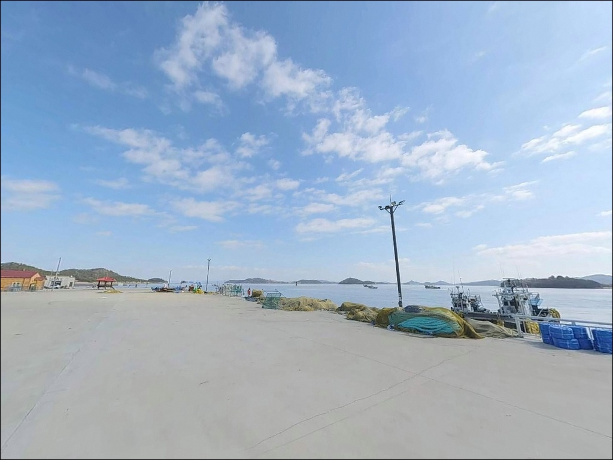
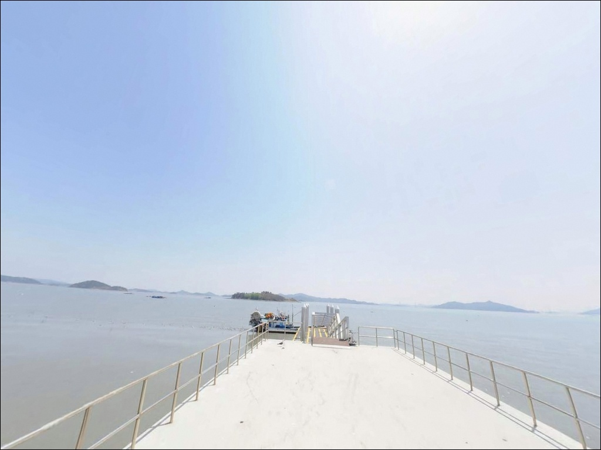

이 페이지에는 광고(제휴 링크 포함)가 있으며, 광고 링크를 통해 구매하면 운영자가 판매 수익 또는 수수료를 받을 수 있습니다. 포인트 사진: 카카오맵 스카이뷰·로드뷰. 이 페이지의 지도·사진 이미지는 카카오맵의 실제 서비스 이미지와 다를 수 있습니다.

전장포항
전남 신안군 임자면 도찬리 25-62
물때 확인 없이 임자도 최북단까지 이동했다가
간조로 갯벌이 드러난 포구 앞에서
낚시 한 번 못 하고 돌아서는 경우가 있습니다.
전장포항은 서해 특성상 조차가 커서
만조 전후 타이밍이 낚시 가능 여부 자체를 결정하는 구조입니다.
전남 신안군 임자면 도찬리에 자리한 전장포항은
임자도 북동쪽 끝단에 위치한 국가어항입니다.
1991년 국가어항으로 지정된 오래된 포구로,
새우젓 생산지로 알려진 조용한 어촌 마을이 배후에 있습니다.
방파제와 선착장이 갖춰진 구조로
방파제 낚시 접근성 자체는 확보되어 있습니다.
이 글은 전장포항의 진입 동선, 차박 여건,
물때 판단 기준, 지형별 낚시 방식에 집중합니다.
조황 단정이나 특정 어종 보장은
이 글의 범위에 포함되지 않습니다.

임자도는 임자대교 개통 이후
육지에서 차량으로 직접 진입할 수 있습니다.
다만 전장포항은 임자도 최북단에 위치해 있어
대교를 건너고 나서도
섬 내부를 상당 거리 북쪽으로 이동해야 합니다.
섬 내 도로는 편도 1~2차선 수준의 지방도로가 대부분으로,
여유 있는 이동 시간을 확보해 두는 편이 좋습니다.
어항 진입로는 포장 도로로 이어져 있어
차량 진입 자체에 큰 어려움은 없는 편입니다.
다만 항 내부 회차 공간은 넉넉하지 않습니다.
대형 SUV나 캠핑 장비를 실은 차량이라면
출발 전 위성지도로 진입 마지막 구간을
미리 확인하고 가는 것이 안전합니다.
주차는 위판장 앞 선착장 인근 공터와
방파제 초입 부근 공간을 활용하는 것이 일반적입니다.
어선 접안 및 조업 동선을 막지 않는 자리가
기본 조건입니다. 장기 주차 허용 여부는
현장에서 안내 표지와 주민 분위기를 직접 확인해야 합니다.

전장포항은 민가와 인접한 어촌 마을 안에 위치합니다.
완전히 고립된 환경이 아니어서
야간에도 생활 조명이 어느 정도 있는 편입니다.
반면 방파제 끝단 쪽은 별도 조명이 없는 구간이 있어
야간 낚시 시 개인 헤드랜턴은 필수입니다.
임자도 최북단이라는 위치 특성상
북동쪽으로 열린 외항 방향은
바람 영향을 직접 받는 구조입니다.
기상에 따라 파고와 풍속이 높아질 수 있어
기상청 해상 예보를 출발 당일 아침 다시 확인하는 것이
안전한 체류의 기본입니다.
어항 구역 내 야간 차박 가능 여부는
현장에서 직접 확인해야 합니다.
민가가 가까운 어촌 특성상
야간 소음과 강한 조명 사용은 자제하는 것이
마을 주민 생활에 방해가 되지 않는 기본 매너입니다.

전장포항 인근에는 전장포항구식당이 운영 중입니다.
낚시 전후 식사를 항 주변에서 해결할 수 있는
몇 안 되는 선택지입니다.
새우젓 토굴과 젓갈 판매장도 인근에 있어
방문 전후 둘러보기에도 나쁘지 않은 환경입니다.
그 외 편의점이나 마트는
반경 3km 이내에서 확인된 곳이 없습니다.
임자면 소재 영창마트가 반경 10km 내외에 위치하며
매일 오전 8시부터 오후 10시까지 운영합니다.
식료품과 낚시 소품 구비 여부는
방문 전 전화로 먼저 확인하는 편이 좋습니다.
전장포항은 임자도 최북단이라는 위치 특성상
식수, 얼음, 미끼, 연료를
본토 출발 전 또는 섬 남부 생활권에서
미리 확보하고 진입하는 것이 현실적인 준비 방식입니다.

전장포항 방문 전 가장 먼저 확인할 것은 물때입니다.
서해 특성상 조차가 크고,
간조 시에는 갯벌이 드러나
수심이 확보되지 않는 구간이 생깁니다.
바다타임에서 임자면 기준 물때를 확인하고
만조 전후 2~3시간을 중심으로 출발 시각을 계산하는 것이
기본 전략입니다.
채비 손실에 대비한 여분 준비도 중요합니다.
방파제 외항 쪽 바닥은 암초와 잡물이 섞인 지형이어서
밑걸림으로 인한 채비 손실이 잦을 수 있습니다.
원투 봉돌과 바늘, 목줄 등
소모성 채비는 넉넉하게 챙기는 편이 좋습니다.
구명조끼는 방파제 낚시 중 반드시 착용합니다.
방파제 끝단과 테트라포트 구간은
파도나 비로 인해 미끄러운 경우가 있어
미끄럼 방지 신발과 함께
안전 장비를 갖추는 것이 기본입니다.
어선 접안 구역과 어구에 접촉하지 않도록
자리 선정에도 주의가 필요합니다.

전장포항은 방파제와 선착장이 조성된 국가어항입니다.
외항과 내항이 구분되는 구조로,
방파제가 외항 쪽을 막아주는 형태입니다.
내항은 비교적 잔잔한 수면 조건을 유지하고,
외항 쪽은 조류 흐름이 직접 드나드는 구간입니다.
방파제 끝단은 수심 변화가 있는 핵심 구간으로,
물때가 맞을 때 원투와 루어 반응이 기대되는 자리입니다.
방파제 끝단 외항 방향은
수심 3~5m 내외 수준이 형성되는 편입니다.
모래와 펄이 혼합된 지형에 암초가 섞여 있어
원투 채비의 밑걸림이 발생하는 구간이 있습니다.
임자도 일대 해역은 새우와 플랑크톤이 풍부한 환경으로 알려져 있어
먹이사슬 상위 어종의 회유 가능성을 기대해볼 수 있는 조건입니다.
내항 선착장 주변은 수심이 얕은 편이며
숭어나 망둥어 등 생활어종이 오가는 구간입니다.
간조 시 갯벌이 드러나는 면적이 넓어지므로
만조 기준 물때 계산이 이 포인트의 핵심 판단 조건입니다.
최신 조황은 출조 전 "전장포항 낚시" 또는 "임자도 방파제 조황" 키워드로
직접 검색해 보시기 바랍니다.

전장포항 지형에서 가장 안정적인 낚시는 원투낚시입니다.
방파제 외항 방향으로 캐스팅하면
모래·펄 혼합 지형에서 바닥층을 탐색할 수 있습니다.
붕장어를 노리는 야간 원투낚시는
조류가 살아 있는 만조 전후 타이밍과 잘 맞는 스타일입니다.
광어나 노래미 계열도 이 지형에서 기대해볼 수 있는 어종입니다.
루어낚시는 방파제 끝단이나 외항 쪽 테트라포트 주변을
공략하는 방식이 어울립니다.
그럽웜, 지그헤드, 미노우 플러그 등을 활용해
우럭이나 노래미 계열을 탐색하는
천천히 바닥을 긁는 방식이 이 포인트 구조에 맞습니다.
농어를 노린다면 조류가 흐르는 방파제 입구 구간에서
미노우 플러그 캐스팅을 병행해볼 수 있습니다.
릴찌낚시는 외항 쪽에서 조류를 타는 흘림 방식으로
감성돔을 노려볼 수 있는 스타일입니다.
다만 조류가 빠른 사리 전후에는
채비 컨트롤이 어려워지므로
조금 전후 타이밍에 집중하는 것이
이 포인트의 릴찌낚시 기본 조건입니다.

전장포항 조류 조건이 여의치 않거나
주차 여건이 맞지 않을 때
첫 번째 대안은 진리선착장입니다.
임자도 입구 쪽에 위치해 있어 이동 거리가 짧고,
전장포항보다 규모가 크고 수심 확보가 용이한 편입니다.
바람 방향이나 조류 조건이 전장포항과 다른 경우
대안으로 먼저 점검해 두기에 적합한 포인트입니다.
하우리항은 임자도 내에서
전장포항 남서쪽 방향에 위치한 또 다른 어항입니다.
여름 시즌에 현장 조황을 미리 검색한 뒤
병행 탐색 동선으로 활용할 수 있는 포인트입니다.
임자도를 처음 찾는다면
진리선착장 또는 하우리항을 기점으로 잡고
전장포항을 함께 탐색하는 동선이 효율적입니다.
차박 여건이 아쉽다면
대광해수욕장 인근이 대안으로 검토할 수 있습니다.
방파제보다 바람 차폐가 나은 편이며
임자도 대표 해변을 끼고 있어
낚시 후 차박 장소를 분리해 운용하는 방식에
잘 맞는 선택지입니다.

원투낚시나 루어를 즐기는 낚시인이라면
전장포항의 방파제 외항 구조는
물때를 맞췄을 때 공략 가치가 있는 지형입니다.
새우젓 생산지로만 알려진 조용한 포구지만
방파제 끝단은 조류 흐름이 살아 있는 구간으로,
직접 발품을 팔아야 하는 탐험형 포인트이기도 합니다.
반면 편의시설이 거의 없는 환경에서
물때 계산 없이 접근하면
긴 이동 거리 대비 낚시 시간이 크게 줄어드는
상황을 맞닥뜨릴 수 있습니다.
물때 확인, 자급 준비, 진입로 점검—
이 세 가지를 갖추고 가면
조용한 포구에서 여유 있는 출조를 만들 수 있는 곳입니다.
새우젓으로 유명한 어촌 마을 분위기 속에서
방파제 끝에 자리를 잡고 조류를 기다리는 차박 여행자라면,
현장 야박 가능 여부만 먼저 확인해두면
임자도 북단 특유의 조용한 밤을
낚시와 함께 보낼 수 있는 포인트입니다.